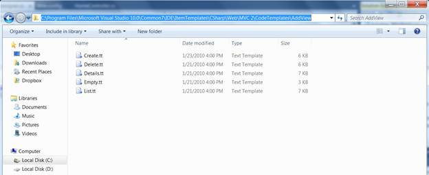

These templates can be placed in the following location.
[Visual Studio Install Directory]\Common7\IDE\ItemTemplates\[CSharp | VisualBasic]\Web\MVC2\CodeTemplates\
 Note: If we place the templates here, templates
are visible in any MVC application.
Note: If we place the templates here, templates
are visible in any MVC application.

Figure 18: Common Location to Paste the Custom Syncfusion T4 Templates